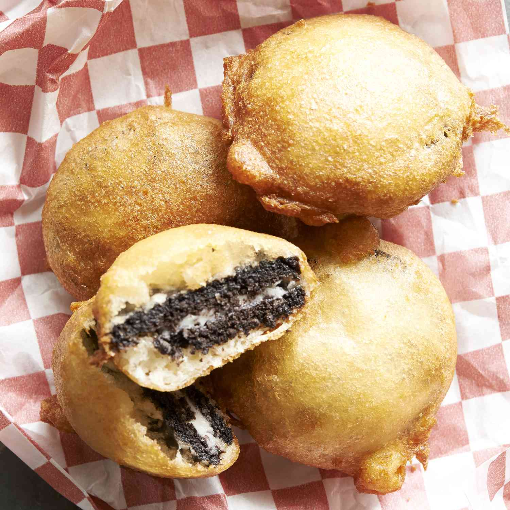

Deep-Fried Oreos

Irresistible Deep-Fried Oreos
Ingredients
- 2 quarts vegetable oil for frying
- 1 cup milk
- 1 large egg
- 2 teaspoons vegetable oil
- 1 cup pancake mix
- 1 (18 ounce) package cream-filled chocolate sandwich cookies (such as Oreo®)
Steps
- Fill a large pot with lightly salted water and bring to a rolling boil. Stir in macaroni and return to a boil. Cook pasta uncovered, stirring occasionally, until tender yet firm to the bite, about 8 minutes. Drain and transfer pasta to a slow cooker.
- Add butter to pasta and stir until melted; season with salt and pepper. Sprinkle about 1/2 of the Cheddar cheese over pasta and stir.
- Whisk evaporated milk and eggs together in a bowl until smooth; stir into pasta mixture.
- Whisk milk and condensed soup together in a bowl until smooth; stir into pasta mixture.
- Sprinkle remaining cheese over pasta mixture; garnish with paprika.
- Cook on Low for 3 hours.
- Serve hot and enjoy!